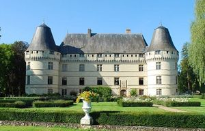
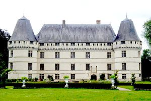
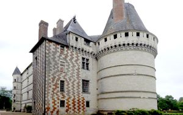
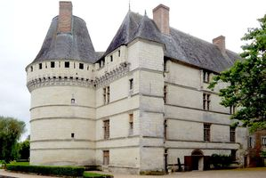

Recensement Jean-Claude Truffet
| Département | 37 — Indre-et-Loire |
| Canton | Chinon |
| Commune | Cheillé |
| Type d'édifice | Château |
| Période d'origine | XV-XVI |




ISLETTE, le fief de l'Islette relevant de la châtellenie de l'Isle-Bouchard à comme premier seigneur Jean Pannetier bailli de Touraine en 1295. Jeanne de Sazilly héritière de cette terre et de celle de Guéritaude l'apporte en dot lors de son mariage en 1353 avec Guy de Maillé fils d'd'Hardouin VIII, baron de Maillé seigneur de Champchevrier et de Jeanne de Montbazon. A sa mort sans postérité de Jeanne de Sazilly, les seigneuries passent à l'un de ses petits-neveux, Juhez de Maillé, seigneur de Villeromain époux d'Isabeau de Châteaubriand. c'est l'un de leur descendants. René de Maillé époux de Françoise le Roy que l'on doit la construction du château actuel vers 1530 par le baron de Maillé, L'édifice fut terminé vers 1535 par Charles de Maillé qui décède en 1531. les descendants se succède à l'Islette jusqu'à la fin du XVIIe siècle qui passera par alliance dans la famille de Tiercelin d'Appelvoisin et par Marie-Anne leur fille, le château passera à Alexis Barjot de Moussy, comte de Roncée avant de revenir à Gabriel-René d'Appelvoisin qui meurt sur l'échafaud en 1793. Après la Révolution le château est en possession de Charlotte d'Appelvoisin, épouse de François-Gabriel Thibault de la Brousse de Verteillac, madame de Verteillac se défait de ce bien ancestral sous le premier Empire. il sera racheté par monsieur Dupuy et en 1859 passe aux courcelle, puis par succession aux Boyer et aux Ferragu et en 1945 à une société privé qui le possède toujours.
ISLETTE, la construction utilisa un bâtiment du XVe siècle, en brique et pierre, sans doute inachevé. le bâtiment principal de" plan rectangulaire a trois niveaux et attique est flanqué de deux grosses tours rondes et d'une aile en retour d'équerre. Une tour polygonale d'escalier flanque l'angle nord-est. Le couronnement présente un chemin de ronde avec mâchicoulis avec créneaux et merlons fendus de meurtrières, le chemin de ronde est éclairé par des hautes lucarnes sommées de tympans triangulaires, dont seules quelques exemplaires subsistent. A l'intérieur, un large escalier en vis en pierre relie les étages. La chapelle est aménagée au rez- de-chaussée de la tour sud-est. Au XIXe siècle, les sommets des combles des tours d'angle furent tronqués et les couronnements des lucarnes ont été retirés. A l'est du château se trouve le moulin. Au nord, la porte du parc, accompagnée d'une poterne, est flanquée de deux pavillons et date de 1638. La construction du château de l'Islette date de 1526 à 1530. Le décor intérieur de ce château fait lobjet dun classement aux M.H. depuis le 15/11/1946. Son histoire est marquée par des séjours répétés de Camille Claudel et d'Auguste Rodin.
Famille de Gabriel-René d'Appelvoisin
"
A Cheillé le château d'Islette 47° 16' 03" Nord, 0° 26' 03" Est